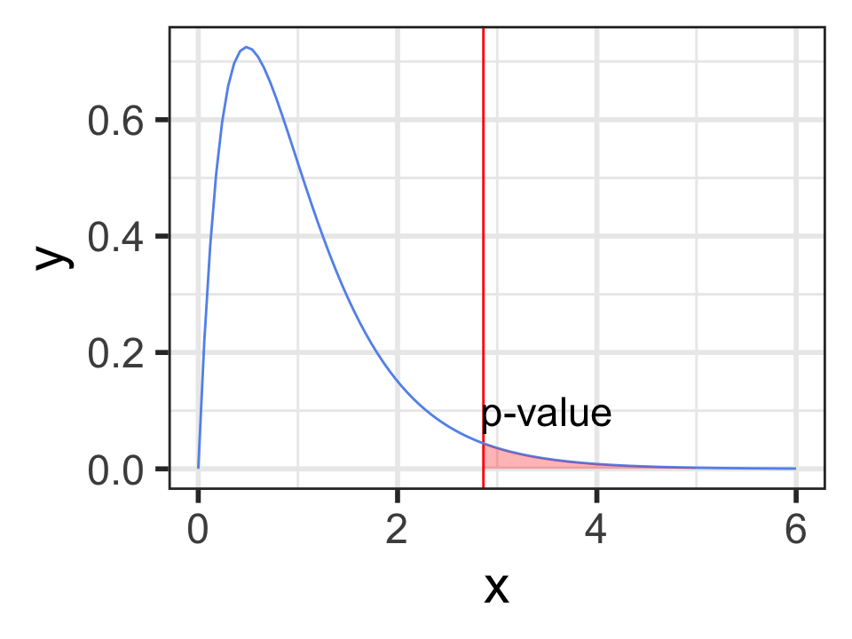
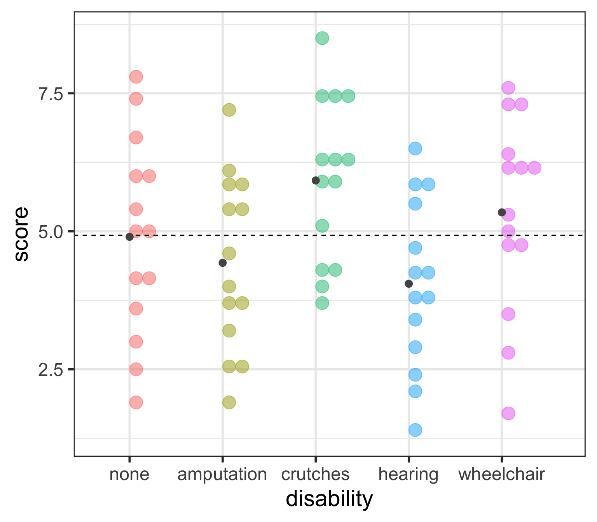
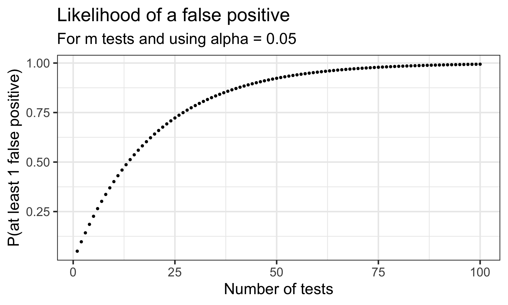

“… an evolving tool to help OHSU members learn about and use inclusive language…”
Sections on: Race and ethnicity, Immigration status, Gender and sexual orientation, and Ability (including physical, mental and chronological attributes)
Factor variable: Make disability a factor variable
employ <- employ %>%mutate(# make "none" the first level# by only listing the level none, all other levels will be in original orderdisability =fct_relevel(disability, "none"),# change the level name amputee to amputationdisability =fct_recode(disability, amputation ="amputee") )
ANOVA compares the variability between groups to the variability within groups
Sums of Squares Error Visually (within groups)
Sums of Squares Error:
\[SSE = \sum_{i = 1}^k\sum_{j = 1}^{n_i}(x_{ij}-\bar{x}_{i})^2 = \sum_{i = 1}^k(n_i-1)s_{i}^2\] where \(s_{i}\) is the standard deviation of the \(i^{th}\) group
This is the sum of the squared differences between each observed \(x_{ij}\) value and its group mean \(\bar{x}_{i}\).
That is, it is the deviation of the \(x_{ij}\)’s from the predicted score by group.
Also called the residual sums of squares, or \(SS_{residual}.\)
Calculate Sums of Squares Error (within groups)
\[SSE = \sum_{i = 1}^k\sum_{j = 1}^{n_i}(x_{ij}-\bar{x}_{i})^2 = \sum_{i = 1}^k(n_i-1)s_{i}^2\] where \(s_{i}\) is the standard deviation of the \(i^{th}\) group
If the groups are actually different, then which of these is more accurate?
The variability between groups should be higher than the variability within groups
The variability within groups should be higher than the variability between groups
If there really is a difference between the groups, we would expect the F-statistic to be which of these:
Higher than we would observe by random chance
Lower than we would observe by random chance
\[F = \frac{MSG}{MSE}\]
ANOVA in base R
# Note that I'm saving the tidy anova table# Will be pulling p-value from this on future slideempl_lm <-lm(score ~ disability, data = employ) %>%anova() %>%tidy()empl_lm %>%gt()
term
df
sumsq
meansq
statistic
p.value
disability
4
30.52143
7.630357
2.86158
0.03012686
Residuals
65
173.32143
2.666484
NA
NA
Hypotheses:
\[\begin{align}
H_0 &: \mu_{none} = \mu_{amputation} = \mu_{crutches} = \mu_{hearing} = \mu_{wheelchair}\\
\text{vs. } H_A&: \text{At least one pair } \mu_i \neq \mu_j \text{ for } i \neq j
\end{align}\]
Do we reject or fail to reject \(H_0\)?
Conclusion to hypothesis test
\[\begin{align}
H_0 &: \mu_{none} = \mu_{amputation} = \mu_{crutches} = \mu_{hearing} = \mu_{wheelchair}\\
\text{vs. } H_A&: \text{At least one pair } \mu_i \neq \mu_j \text{ for } i \neq j
\end{align}\]
empl_lm # tidy anova output
# A tibble: 2 × 6
term df sumsq meansq statistic p.value
<chr> <int> <dbl> <dbl> <dbl> <dbl>
1 disability 4 30.5 7.63 2.86 0.0301
2 Residuals 65 173. 2.67 NA NA
There is sufficient evidence that at least one of the disability groups has a mean employment score statistically different from the other groups. ( \(p\)-value = 0.03).
Conditions for ANOVA
IF ALL of the following conditions hold:
The null hypothesis is true
Sample sizes in each group group are large (each \(n \ge 30\))
OR the data are relatively normally distributed in each group
Variability is “similar” in all group groups:
Is the within group variability about the same for each group?
As a rough rule of thumb, this condition is violated if the standard deviation of one group is more than double the standard deviation of another group
The F-distribution has two different degrees of freedom:
one for the numerator of the ratio (k – 1) and
one for the denominator (N – k)
\(p\)-value
is always the upper tail
(the area as extreme or more extreme)

empl_lm %>%gt()
term
df
sumsq
meansq
statistic
p.value
disability
4
30.52143
7.630357
2.86158
0.03012686
Residuals
65
173.32143
2.666484
NA
NA
# p-value using F-distributionpf(2.86158, df1=5-1, df2=70-5, lower.tail =FALSE)
[1] 0.03012688
Which groups are statistically different?
So far we’ve only determined that at least one of the groups is different from the others,
but we don’t know which.
What’s your guess?

Post-hoc testing for ANOVA
determining which groups are statistically different
Post-hoc testing: pairwise t-tests
In post-hoc testing we run all the pairwise t-tests comparing the means from each pair of groups.
With 5 groups, this involves doing \({5 \choose 2} = \frac{5!}{2!3!} = \frac{5\cdot 4}{2}= 10\) different pairwise tests.
Problem:
Although the ANOVA test has an \(\alpha\) chance of a Type I error (finding a difference between a pair that aren’t different),
the overall Type I error rate will be much higher when running many tests simultaneously.
\[\begin{align}
P(\text{making an error}) = & \alpha\\
P(\text{not making an error}) = & 1-\alpha\\
P(\text{not making an error in m tests}) = & (1-\alpha)^m\\
P(\text{making at least 1 error in m tests}) = & 1-(1-\alpha)^m
\end{align}\]

The Bonferroni Correction (1/2)
A very conservative (but very popular) approach is to divide the \(\alpha\) level by how many tests \(m\) are being done:
\[\alpha_{Bonf} = \frac{\alpha}{m}\]
This is equivalent to multiplying the p-values by m:
\[p\textrm{-value} < \alpha_{Bonf} = \frac{\alpha}{m}\] is the same as \[m \cdot (p\textrm{-value}) < \alpha\] The Bonferroni correction is popular since it’s very easy to implement.
The plot below shows the likelihood of making at least one Type I error depending on how may tests are done.
Notice the likelihood decreases very quickly
Unfortunately the likelihood of a Type II error is increasing as well
It becomes “harder” and harder to reject \(H_0\) if doing many tests.
Pairwise comparisons using t tests with pooled SD
data: employ$score and employ$disability
none amputation crutches hearing
amputation 1.000 - - -
crutches 1.000 0.184 - -
hearing 1.000 1.000 0.035 -
wheelchair 1.000 1.000 1.000 0.401
P value adjustment method: bonferroni
Since there were 10 tests, all the p-values were multiplied by 10.
Are there any significant pairwise differences?
Tukey’s Honest Significance Test (HSD)
Tukey’s Honest Significance Test (HSD) controls the “family-wise probability” of making a Type I error using a much less conservative method than Bonferroni
It is specific to ANOVA
In addition to adjusted p-values, it also calculates Tukey adjusted CI’s for all pairwise differences
The function TukeyHSD() creates a set of confidence intervals of the differences between means with the specified family-wise probability of coverage.
# need to run the model using `aov` instead of `lm`empl_aov <-aov(score ~ disability, data = employ) TukeyHSD(x=empl_aov, conf.level =0.95)
Multiple testing: controlling the Type I error rate
The multiple testing issue is not unique to ANOVA post-hoc testing.
It is also a concern when running separate tests for many related outcomes.
Beware of p-hacking!
Problem:
Although one test has an \(\alpha\) chance of a Type I error (finding a difference between a pair that aren’t different),
the overall Type I error rate will be much higher when running many tests simultaneously.
\[\begin{align}
P(\text{making an error}) = & \alpha\\
P(\text{not making an error}) = & 1-\alpha\\
P(\text{not making an error in m tests}) = & (1-\alpha)^m\\
P(\text{making at least 1 error in m tests}) = & 1-(1-\alpha)^m
\end{align}\]
ANOVA Summary
\[\begin{align}
H_0 &: \mu_1 = \mu_2 = ... = \mu_k\\
\text{vs. } H_A&: \text{At least one pair } \mu_i \neq \mu_j \text{ for } i \neq j
\end{align}\]
ANOVA table in R:
lm(score ~ disability, data = employ) %>%anova()
Analysis of Variance Table
Response: score
Df Sum Sq Mean Sq F value Pr(>F)
disability 4 30.521 7.6304 2.8616 0.03013 *
Residuals 65 173.321 2.6665
---
Signif. codes: 0 '***' 0.001 '**' 0.01 '*' 0.05 '.' 0.1 ' ' 1